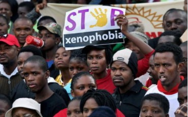

Xenofobia do Bem
Afirmação do presidente da Argentina de que ‘brasileiros vieram da selva’ foi debatida por comentaristas do programa...


Xenofobia ainda é difícil
Imigrantes e organizações relatam as dificuldades de levar adiante casos de violências motivadas pelo preconceito...
Argentinos Europeus
Nesta semana, o presidente argentino, Alberto Fernández, gerou forte polêmica na Argentina, no Brasil e no México ao fazer uma declaração considerada...
A xenofobia pode custar caro
a Alemanha foi o país europeu que abrigou o maior número de imigrantes, chegando a um total de 917 mil pessoas...